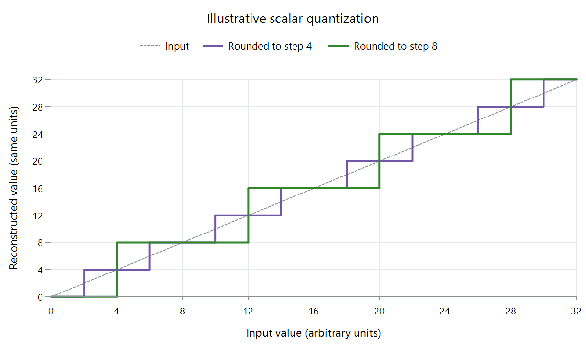

Video Quantization Parameter (QP)
A quantization parameter (QP) controls the strength of quantization in a codec's coding process. Quantization replaces precise values with coarser representable values, which can reduce the amount of information that needs encoding.
Higher QP commonly means coarser quantization, but its numerical meaning belongs to the codec and implementation. In ordinary 8-bit H.264 luma coding, QP ranges from 0 to 51; increasing it by six doubles the quantization step size under otherwise unchanged scaling. Other formats and sample depths require their own interpretation.

Generic scalar illustration: output = step × floor(input / step + 0.5), for input 0–32. Steps four and eight are arbitrary units, not a mapping from QP values to pixels or a particular codec's quantization equation.
A fixed QP does not fix visible quality
| Property | What it means |
|---|---|
| Quantization step | Spacing between reconstructed representable values |
| A reported QP | The codec's quantizer selection |
| Constant QP mode | A quantizer-control policy, possibly with separate picture-type settings |
| CRF | An adaptive quality-control method that can vary QP |
A detailed moving scene and a quiet flat scene can expose different errors at the same quantizer setting. Bits per frame also vary: fixed quantization does not make an encode CBR.
Actual encoders can adjust quantizers between picture types and, in some modes, between regions. An average QP in a log summarizes those decisions and hides their distribution. It is not a perceptual score.
For Emby transcoding, a QP reported by the output encoder describes part of that conversion. Comparing it with a source encoded using another codec or sample format does not establish which picture is better. Compare the decoded pictures under matching conditions, and use the quantizer information to explain the encoder's choices.
See Also
- Lossy Video Compression
- Constant Rate Factor (CRF) for Video
- Constant Quality Video Encoding
- Video Compression Artifacts